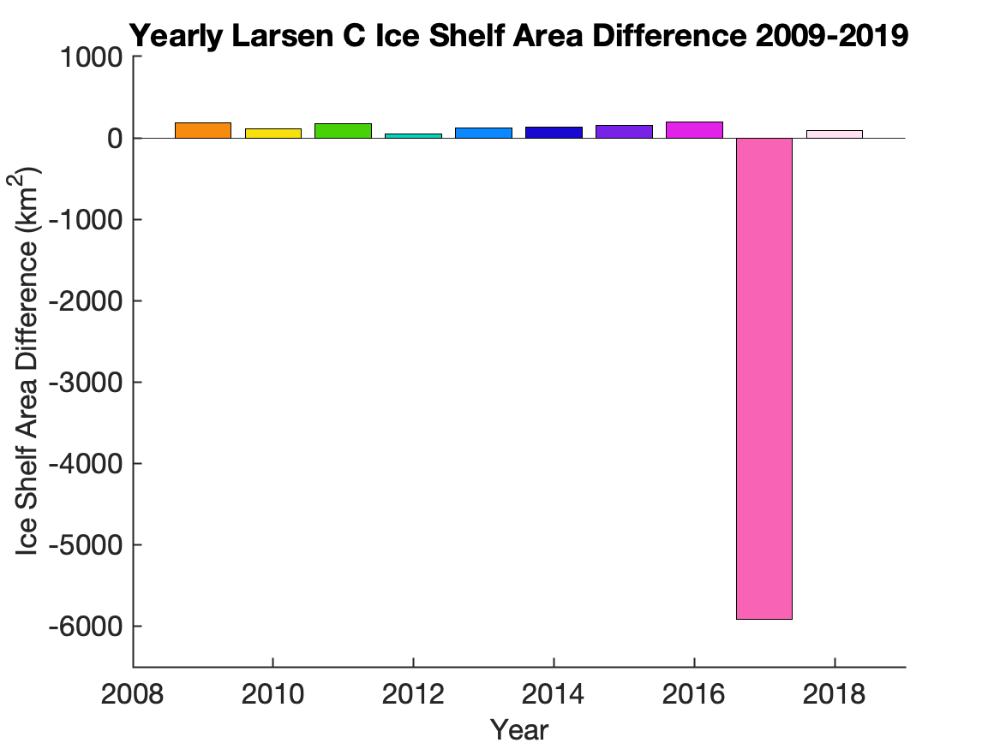
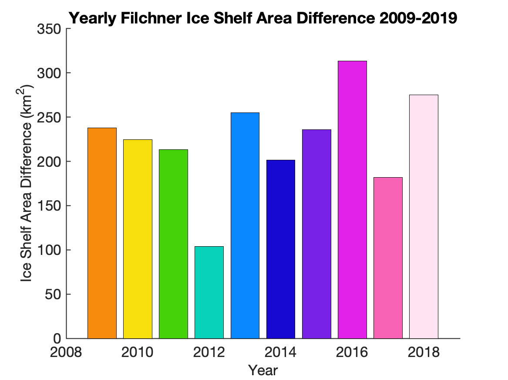

<!-- <!doctype html>
<html>
<head>
<meta charset="UTF-8">
<meta name="viewport" content="width=device-width, initial-scale=1">

<link rel="stylesheet" type="text/css" href="map.css" media="all" >
<link rel="stylesheet" type="text/css" href="site.css" media="all" />

<title>Julia Andreasen's Homepage</title>

</head>

<body>
<div class="container">
<div class="header">
	<header> <!--top header image and title-->
			
			<div class="centered">Ice Shelf Calving Fronts in Antarctica</div>
		</div>
		<!--
		href="http://cpom.leeds.ac.uk" />
		area shape="rect" coords="820,90,950,0" alt="Image Map" style="outline:none;" title="ESA" href="http://www.esa.int/" />
	map> --> 
<!--
</header>
<!-- Navigation bar -->
<!-- <div class= "topnav">
	<a href="index.html">About Me</a>
	<a href="dissertation.html">Background</a>
	<a href="larsc.html">Ice Shelf Change</a>
	<a class="active" href="scripts.html">Instructional Scripts</a>
	<a href="http://www.cpom.ucl.ac.uk/csopr/index.html" target="_blank" class="right">CPOM Data Portal</a>
</div>
<div style="padding-left:16px; padding-right:16px">
	<h2>Instructional Scripts and Data Portal</h2>
	<p></p>
	<p>Welcome to the scripts and data portal. Here you can view scripts for the plots created for each ice shelf, learn how to input your own data, and learn about future research goals. All scripts are originally created by Julia Andreasen.</p>
	<p></p>
	<p>Three essential figures are created for each ice shelf, these figures include: </p>

<div class= "topnav2">
		<a href="#AreaChange">Area Change Plot</a></li>
		<a href="#AreaDiff">Area Difference Plot</a></li>
		<a href="#SummaryTable">Summary Table</a></li>
		<a href="#FutureWork" class="right"><strong style="color:#e8ccff";>Future Work</strong></a></li>
</div>

<div class="instructions">
	<h4> To Begin: </h4>
	Select and download your the area change file from the following ice shelves:
	<ul>
		<li><a href="larsc_area1.prn" download>Larsen C</a></li>
		<li><a href="ronne_area1.prn" download>Ronne</a></li>
		<li><a href="filch_area1.prn" download>Filchner</a></li>
		<li><a href="brunt_area1.prn" download>Brunt</a></li>
		<li><a href="amery_area1.prn" download>Amery</a></li>
		<li><a href="rosse_area1.prn" download>Ross East</a></li>
		<li><a href="rossw_area1.prn" download>Ross West</a></li>
		<li><a href="thwaites_area1.prn" download>Thwaites</a></li>
		<li><a href="pinei_area1.prn" download>Pine Island</a></li>
	</ul>

<br></br>
The first column contains the years in which the ice shelf was measured. The second column contains each ice shelf's area (in km2) per year. Ensure that the file is formatted as a space separated spreadsheet (.prn).
<br></br>
<br></br>
<a name="AreaChange"><h2> Area Change Plot</h2></a>
<p>The area change plot allows viewers to see the overall area of an ice shelf, the region between the grounding line and calving front, from 2009-2018/19. These plots help guide calving front trend analysis by highlighting regions with stable ice growth, as well as areas suceptible to large calving events (such as Larsen C in 2017).
	Specific yearly values for each plot can be seen in the .prn area change files.
</p> <p><strong>Downloadable scripts for each ice shelf are located beneath the area change graphs, labeled "</strong> *Ice Shelf* <strong> Script".</strong> </p>
<div class="gallery">
	<div style="width: 100%; font-size:100%; text-align:center;"><a href="larsc.html"><a href="larsc_areachange.m" download> Larsen C Script</a></a></div>
	<div style="width: 100%; font-size:100%; text-align:center;"><a href="ronne.html"><a href="ronne_areachange.m" download> Ronne Script</a></a></div>
	<div style="width: 100%; font-size:100%; text-align:center;"><a href="filch.html"><a href="filch_areachange.m" download> Filchner Script</a></a></div>
	<div style="width: 100%; font-size:100%; text-align:center;"><a href="brunt.html"><a href="brunt_areachange.m" download> Brunt Script</a></a></div>
	<div style="width: 100%; font-size:100%; text-align:center;"><a href="amery.html"><a href="amery_areachange.m" download> Amery Script</a></a></div>
	<div style="width: 100%; font-size:100%; text-align:center;"><a href="rosse.html"><a href="rosse_areachange.m" download> Ross East Script</a></a></div>
	<div style="width: 100%; font-size:100%; text-align:center;"><a href="rossw.html"><a href="rossw_areachange.m" download> Ross West Script</a></a></div>
	<div style="width: 100%; font-size:100%; text-align:center;"><a href="thwaites.html"><a href="thwaites_aerachange.m" download> Thwaites Script</a></a></div>
	<div style="width: 100%; font-size:100%; text-align:center;"><a href="pinei.html"><a href="pinei_areachange.m" download> Pine Island Script</a></a></div>
</div>
<h4> Instructions</h4>
Using Amery Ice Shelf as an example:
<br></br>
Insert your .prn file into line 9 of the code. The script will automatically assign x and y (year and area) to your columns.
<br></br>

<br></br>
Specify which ice shelf you are analysing in the plot title, line 23.
<br></br>

<br></br>
Modify the year range (line 30) and the area range (line 31), determined from the .prn file, for your scatter plot.
<br></br>

<br></br>
Specify the output filename for your gif and run the program, line 42.
<br></br>

<main class="instructions">
<br></br>
<br></br>
<a name="AreaDiff"><h2> Area Difference Per Year Plot</h2></a>
<p>The area difference plot allows viewers to see the overall difference in area of an ice shelf, the region between the grounding line and calving front, from year to year (2009-2018/19). These plots provide a deeper level of how ice shelves have changed on a yearly basis.
	Comparing the difference in ice shelf area allows the viewer to see which year experienced the most ice growth or decay. This value creates an opportunity for external environmental analysis of what occured in Antarctica during that year and how it might have affected a certain region.
</p><p><strong>Downloadable scripts for each ice shelf are located beneath the area difference graphs, labeled "</strong> *Ice Shelf* <strong> Script".</strong> </p>
<div class="gallery">
	<div style="width: 100%; font-size:100%; text-align:center;"><a href="larsc.html"><a href="larsc_areadiffbar.m" download> Larsen C Script</a></a></div>
	<div style="width: 100%; font-size:100%; text-align:center;"><a href="ronne.html"><a href="ronne_areadiffbar.m" download> Ronne Script</a></a></div>
	<div style="width: 100%; font-size:100%; text-align:center;"><a href="filch.html"><a href="filch_areadiffbar.m" download> Filchner Script</a></a></div>
	<div style="width: 100%; font-size:100%; text-align:center;"><a href="brunt.html"><a href="brunt_areadiffbar.m" download> Brunt Script</a></a></div>
	<div style="width: 100%; font-size:100%; text-align:center;"><a href="amery.html"><a href="amery_areadiffbar.m" download> Amery Script</a></a></div>
	<div style="width: 100%; font-size:100%; text-align:center;"><a href="rosse.html"><a href="rosse_areadiffbar.m" download> Ross East Script</a></a></div>
	<div style="width: 100%; font-size:100%; text-align:center;"><a href="rossw.html"><a href="rossw_areadiffbar.m" download> Ross West Script</a></a></div>
	<div style="width: 100%; font-size:100%; text-align:center;"><a href="thwaites.html"><a href="thwaites_areadiffbar.m" download> Thwaites Script</a></a></div>
	<div style="width: 100%; font-size:100%; text-align:center;"><a href="pinei.html"><a href="pinei_areadiffbar.m" download> Pine Island Script</a></a></div>
</div>
<h4> Instructions</h4>
Using Amery Ice Shelf as an example:
<br></br>
Insert your .prn file into line 9 of the code. The script will automatically assign x and y (year and area) to your columns.
<br></br>

<br></br>
Modify the year range (line 34) and the area range (line 35), determined from the .prn file, for your scatter plot.
<br></br>

<br></br>
Specify which ice shelf you are analysing in the plot title, line 36.
<br></br>

<br></br>
Specify the output filename for your gif in lines 39 and 40 and run the program.
<br></br>

<main class="instructions">
	<br></br>
	<br></br>
<a name="SummaryTable"><h2> Summary Table</h2></a>
<p>The summary table allows viewers to see the major area datapoints for each ice shelf between 2009-2018/19.
	The area change between the first and last dates recorded, a decade-worth of data, provides a general sense of an ice shelf's overall stability and future tendency to either migrate away or towards the grounding line.
	The percentage change is the difference between the first and last area measurements as a percentage. This value displays how impactful the past decade has been on the ice shelves and how much ice they have gained or lost comparative to their overall size.
	The rate of change values give a general sense into the speed of an ice shelf's movement, proving that all ice shelves are moving. However, without any large calving events, most will migrate at slower rates.
	The maximum area difference recorded from 2009-2018/19, and its corresponding year, are key for identifying either major/minor calving events or years of substantial accumulation.</p>
<a href= 'summarytable.png'></a>
<h4> Download script <a href="summarytable.m" download> here</a> and excel file <a href="summarytable.xlsx" download>here</a> </h4>
<h4> Instructions</h4>
<main class="instructions">
Insert your .prn file into lines 9-17 of the code. The script will automatically assign x and y (year and area) to your columns.
<br></br>

<br></br>
Specify which ice shelves you are analsing in the ice shelf column of the table, line 46.
<br></br>

<br></br>
Specify the output filename for your .png and .xlsx files and run the program.
<br></br>

<br></br>
To access all matlab code used in this project click <a href="allscripts.html" target="_blank">here</a>.
<br></br>
<h4> Summary Table in HTML Form</h4>
In order to more clearly display the data created in the summary table, an additional table was created in HTML.
 <p>All information used in this table was sourced from the original MATLAB code found in the <strong><a href=#SummaryTable>Summary Table</a></strong> section above. </p>
<table class="tableizer-table">
<thead><tr class="tableizer-firstrow"><th>Ice Shelf</th><th>First Date</th><th>Last Date</th><th>First Area km2</th><th>Last Area km2</th><th>Change between First and Last Date km2</th><th>Percentage Change</th><th>Rate of Change km2 per yr</th><th>Maximum Distance km2</th><th>Maximum Distance Year</th></tr></thead><tbody>
	<tr><td>Larsen C</td><td>2009</td><td>2019</td><td>46547.7</td><td>41830.8</td><td>-4716.9</td><td>-10.1</td><td>-471.7</td><td>5912</td><td>2017</td></tr>
  <tr><td>Ronne</td><td>2009</td><td>2019</td><td>339168.8</td><td>345020.8</td><td>5852</td><td>1.7</td><td>585.2</td><td>728.6</td><td>2013</td></tr>
  <tr><td>Filchner</td><td>2009</td><td>2019</td><td>103920.2</td><td>106163.4</td><td>2243.2</td><td>2.2</td><td>224.3</td><td>313.6</td><td>2016</td></tr>
  <tr><td>Brunt</td><td>2009</td><td>2019</td><td>37180.5</td><td>39061.1</td><td>1880.6</td><td>5.1</td><td>188.1</td><td>336.1</td><td>2014</td></tr>
  <tr><td>Amery</td><td>2009</td><td>2019</td><td>60858.5</td><td>62342.2</td><td>1483.7</td><td>2.4</td><td>148.4</td><td>285.7</td><td>2013</td></tr>
  <tr><td>Ross East</td><td>2009</td><td>2019</td><td>194758.6</td><td>196848.3</td><td>2089.7</td><td>1.1</td><td>209</td><td>254</td><td>2013</td></tr>
  <tr><td>Ross West</td><td>2009</td><td>2019</td><td>306947.9</td><td>310799.7</td><td>3851.8</td><td>1.3</td><td>385.2</td><td>490.2</td><td>2013</td></tr>
  <tr><td>Thwaites</td><td>2009</td><td>2019</td><td>198092.4</td><td>195159.9</td><td>-2932.5</td><td>-1.5</td><td>-293.3</td><td>2795.9</td><td>2012</td></tr>
  <tr><td>Pine Island</td><td>2009</td><td>2019</td><td>7006.1</td><td>5952.9</td><td>-1053.2</td><td>-15</td><td>-105.3</td><td>581</td><td>2013</td></tr>
 </tbody></table>
 <p>Tables in HTML are defined using various established table commands. </p>
 <p>Begin the formation of the table with a < table > tag, linking the table to css styling code. </p>
<a href='html_01.png'></a>
 <p> Create the header section of the table by using the < thead > tag and linking the header row to its css style code. Insert each individual column header with a < th > tag, then begin the table body < tbody >.</p>
</a>
<p> Insert the datapoints found in each cell row, < tr >, with < td > tags. </p>
<a href='html_3.png'></a>
<p></p>
<a href='html_4.png'></a>
<p> Highlight the specified ice shelf in the table, depending on the ice shelf page. This is example code from the <a href='amery.html'>Amery</a> page. </p>
<a href='html_5.png'></a>
<p> Finish the table by closing the < tbody > and < table > tags.</p>
<a href='html_6.png'></a>
<p> Write css style codes to create a clear and concise table.</p>
<p> Table style
	<a href='html_7.png'></a></p>
	<p> Header style
		<a href='html_9.png'></a></p>
<p> Data style
	<a href='html_8.png'></a></p>
<h4>	To access the full html code click <a href="html_code.png" target="_blank">here</a>.</h4>
	<br></br>
	<a name="FutureWork"><h2> Future Work</h2></a>
	The goal of this research project is to measure all major ice shelves fringing Antarctica, this includes: the Antarctic Peninsula, the West Antarctic Ice Sheet, and the East Antarctic Ice Sheet. The nine ice shelves analysed in this computer project only represent a small portion of the total coastal Antarctic area to be measured.
	In addition to increasing the quantity of ice shelves and their calving fronts, this project aims to connect its measurements from the past decade with historical data dating as far back as the 1960s. This collaboration will create a more expansive record of the ice shelves. Some of this historical data is displayed on the Larsen C webpage, measured by Alison Cook.
	Once the area changes have been measured for each ice shelf, the next step will be to look at why the ice shelves responded the ways that they did (grew, shrank, or stayed the same). This will be investigated through various datasources such as: oceanic temperature patterns, ice velocity, climatic temperature changes, etc.
	<p> Overall, the purpose of this research is to elevate our current understanding of Antarctica by dissecting the mysteries of calving fronts and why/how they experience highly unpredictable patterns of growth and retreat. </p>
	
	<small>Thwaites Glacier, courtesy of <a href="https://www.nationalgeographic.com/environment/2019/03/watching-thwaites-glacier-calving-antarctica/" target="_blank">National Geographic</a> </small>
<br></br>
</div>
</div>
</div>
</body>
</html>
-->
